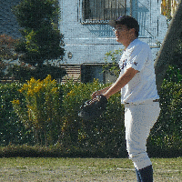

| 番号 | 背番号 | 選手名 | イメージ | 守備 | 係 |
| 1 | 1番 |

|
変則サイドスロー高津 | 投手・二塁手 | キャプテン |
| 2 | 不明 |

|
チームのウンディーネ | マネージャー | マネージャー |
| 3 | 24番 |

|
まさに巨人の小林選手 | 捕手・二塁手 | マネージャー補佐（正） |
| 4 | 23番 |
|
トリプルスリーの逸材 | 三塁手・投手 | マネージャー補佐（副） |
| 5 | 10番 |

|
あっという間に監督に | 一塁手・外野 | 道具係（正） |
| 6 | 3番 |

|
立浪並みの打撃センス | 捕手・外野 | 道具係（副） |
| 7 | 不明 |

|
まさに男ではなく「漢」 | 遊撃手・外野 | 所属なし |
| 8 | 6番 |

|
筑紫野の今宮 健太 GG賞取れます |
三塁手・遊撃手 | イベント係？（副） |
| 9 | 8番 |

|
来期は二刀流 | 外野手・投手 | 所属なし |
| 10 | 不明 | チームの専属モデル | 遊撃手・二塁手 | 所属なし | |
| 11 | 不明 |
|
練習と試合にきてね | 不明 | 所属なし |
| 12 | 不明 |
|
家庭教師ヒットマン | 一塁手・二塁手 | イベント係？（正） |
| 13 | 不明 |  | 投げ方マジ藤川 | 捕手・投手 | 所属なし |
| 14 | 不明 |
|
弱点はありません。 | 捕手・投手 | 所属なし |
| 15 | 不明 |
|
チームゆるキャラに任命 | 外野手 | 所属なし |
| 16 | 不明 | イチロー超えのレーザービーム | 外野手 | 所属なし |

部員一覧